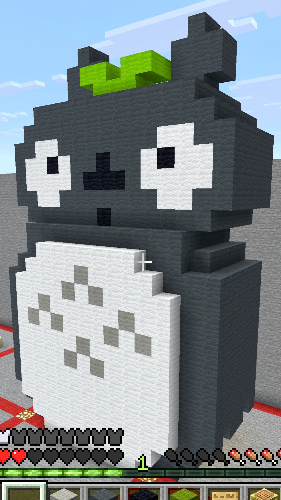

My sculpture is the character Totoro from the movie "My Neighbor Totoro". This character represents Ghibli Studio, which also represents my childhood. I feel like a lot of kids grew up watching Ghibli movies such as "Spirited Away" and "Ponyo"—and this specific character, Totoro, is recognized by so many people!
I loved him as a kid, so I decided to build him in Minecraft. Since this was my first time building in Minecraft, I actually died 7 times from falling off and getting hit by zombies while working on him! It was a struggle, but definitely worth it to bring this childhood favorite to life. ✨